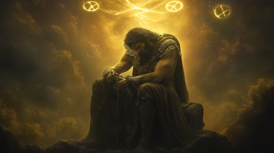

After the Olympians defeated the Titans in the Titanomachy, Cronus was captured and cast into Tartarus, the deepest abyss of the cosmos. Once the ruler of time and the heavens, Cronus became the symbol of tyranny overthrown and prophecy fulfilled.
In some myths, Cronus is imprisoned forever, bound in chains and guarded by the Hecatoncheires. In others, particularly Orphic traditions, he is later released to rule a peaceful realm. But in most tales, his fall is absolute—a god devoured by the very fear he sowed.
This moment is not just a personal defeat. It is a cosmic shift: the end of an age where time itself was devouring, and the beginning of the Olympian era, where rule was shared—though not without its own chaos.
Fall of Cronus
I ruled the stars, I ruled the tide
I cast my father’s blood aside
I drank the sky, I held the flame
Now silence shouts my shattered name
They were my sons, my blood, my fear—
And now they bind me year by year
Fall of Cronus, time undone
I am the dusk that swallowed sun
My crown is lost, my echo drowns
In Tartarus, beneath their frowns
I forged my throne from heaven's bones
Now darkness chews what once was stone
The storm I birthed has turned on me—
The scythe of fate cuts endlessly
No prophecy can now be burned
The wheel has turned, the wheel has turned
Fall of Cronus, time undone
I am the dusk that swallowed sun
My crown is lost, my echo drowns
In Tartarus, beneath their frowns
They speak of justice, sing of law
But all I see is open maw
The sons who feared to meet my eye
Now feed the tale that gods don’t die
“Remember me when time forgets—
Even kings must pay their debts.”
Fall of Cronus, time undone
I am the dusk that swallowed sun
No sky to rule, no star to chase—
Just broken hours in endless space
So bury me beneath the scream—
For I was once a Titan dream